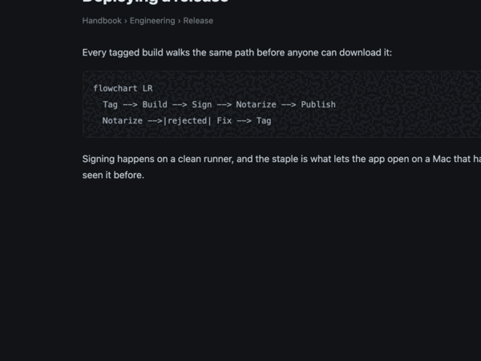
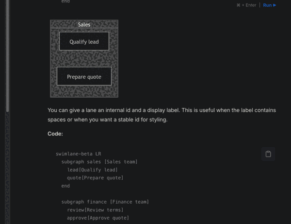
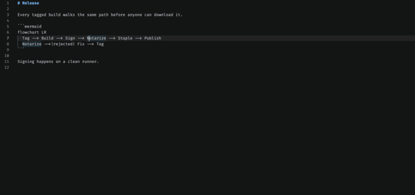
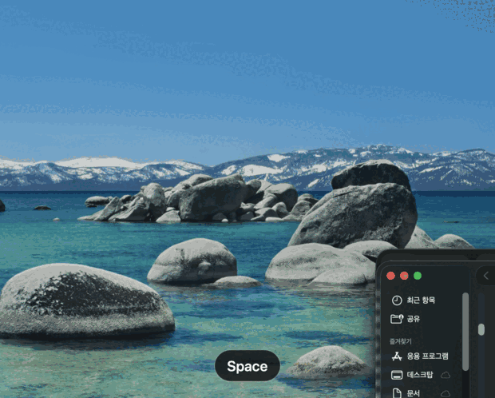

You are reading a Mermaid diagram
as source code.
FlowPeek draws it where you already are — a docs page, a pull request, your editor.
A macOS menu-bar app. Free, open source, and nothing leaves your Mac.
brew install --cask flowpeek/tap/flowpeek

Two more ways in
Point at it
Hold Option and move the pointer. The block is outlined where it sits; Space draws it.

Copy it
A badge appears near the menu bar and names the key that opens it.
Editors, too

In Finder

.mmd file, or double-click it to open a preview window.Come back to one
What it does not do
- No network. Mermaid is bundled, so drawing a diagram makes no request at all.
- No logging. The text you point at is read into memory and never written down. The diagrams it actually draws are kept on your Mac so the shelf can offer them back — capped by count, by age, or switched off entirely.
- One permission. Accessibility, because reading the text you are pointing at is the whole feature. Say no and copying still works; the app says so instead of pretending to be broken.
- No account, no telemetry, no upsell. MIT licensed.